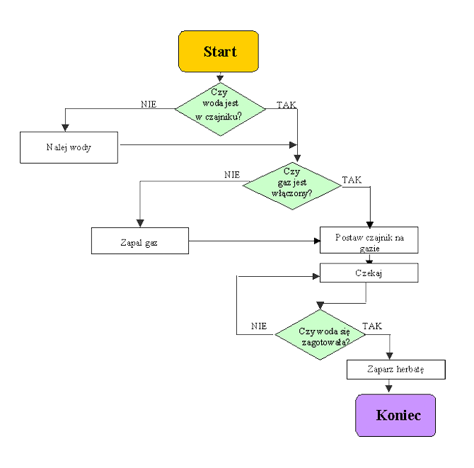

Test - Jan Kowalski
1. Znacznik nowej linii to
<hr>
<br>
<b>
<i>
2. W przedstawionym algorytmie znajduje się
3 bloki wprowadzania danych
3 bloki porównania
3 bloki operacyjne
2 bloki wprowadzania danych

3. Jakim znacznikiem robimy akapit?
<hr>
<b>
<p>
<h1>
4. Jakim znacznikiem pogrubiamy?
<hr>
<b>
<p>
<h1>
5. Jakim znacznikiem robimy linię?
<hr>
<b>
<p>
<h1>
6. Jak nazywamy język, w którym piszemy strony WWW
7. Które stwierdzenia są prawidłowe:
Java Script działa po stronie serwera
Java Script działa po stronie klienta
PHP działa po stronie serwera
PHP działa po stronie klienta
8. Do przesyłania formularza służy przycisk
puste
Reset
Submit
Button
9. Prześlij nam Twoje uwagi